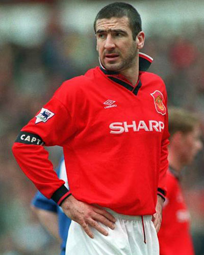

BOBBY CHARLTON
One of the greatest midfielders in football history, known for leadership, passing, and a powerful long-range shot. A survivor of the Munich Air Disaster, he led United to the 1968 European Cup and helped England win the 1966 World Cup.

GEORGE BEST
A magical winger with world-class dribbling ability, flair, creativity, and iconic status on and off the pitch. Ballon d'Or winner in 1968, Best was a uniquely gifted player whose talent inspired generations.
Famous Quotes:
- "In 1969 I gave up women and alcohol. It was the worst 20 minutes of my life."
- "I'd spent a lot of money on booze, birds and fast cars. The rest I just squandered."
- "If you'd given me the choice of going out and beating four men and smashing a goal in from thirty yards against Liverpool or going to bed with Miss World, it would have been a difficult choice. Luckily, I had both."
ERIC CANTONA
The charismatic forward who transformed United in the 1990s. Known for elegance, strength, vision, and leadership. His arrival marked the beginning of the Premier League dynasty under Sir Alex Ferguson. In January 1995 Cantona was infamously convicted of assaulting Crystal Palace fan Matthew Simmons, launching a kung fu kick over the advertising hoardings at Selhurst Park. Cantona had been sent off and Simmons had been shouting abuse at the Frenchman.
WAYNE ROONEY
United's all-time leading goal scorer across all competitions. A complete forward with power, vision, and unmatched work-rate. Key part of 5 Premier League titles and 2008 Champions League win. Adored by the fans Wayne, could play many roles and positions and always got the job done.

CRISTIANO RONALDO
Explosive winger turned elite goal scorer. Winner of 3 Premier League titles, the 2008 Ballon d'Or, and the Champions League. Known for relentless work ethic, athleticism, and record-breaking achievements. He left Manchester United to become arguably the best player of all time at Real Madrid and later returned to united in all his maturity in 2021.

DAVID BECKHAM
World-class midfielder famous for precision crossing, long-range passing, and iconic free kicks. A vital part of the 1999 treble-winning side and one of the most influential figures in global football culture. A local Manchester boy who became a global superstar and married one of the Spice Girls surging his fame even more.